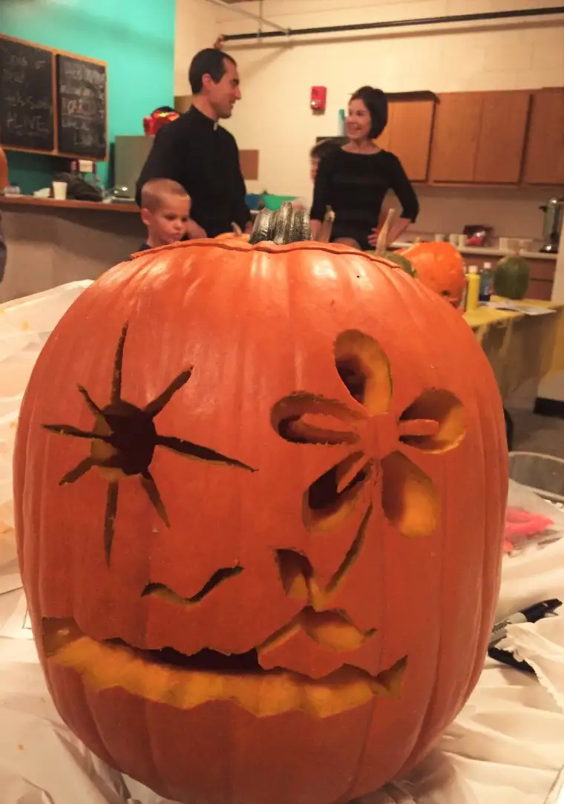

Our three didn’t win any prizes Thursday night.
{kind=link}
But we had fun, carving and playing and popping popcorn balls into our mouths, chased with a swig of warm apple cider.
{kind=link}
When the invitation came on Facebook to join the pumpkin-carving night, I wasn’t sure at first I wanted to break tradition of laying out newspapers on our kitchen table and having a little family jack-o-lantern-making evening.
{kind=link}
But then I thought of the mess — the pumpkin guts and all they’re accompanying seeds and slime, and the markers and mush. Suddenly, taking the whole tradition outside of the house was sounding pretty good.


{kind=link}
And can I admit I have a thing for apple cider, and that drew me, too?
There were some pretty awesome Jacks that came onto the scene.
{kind=link}
{kind=link}
{kind=link}

{kind=link}
{kind=link}
And when the carving commenced, the boys found themselves hanging out at the air hockey corner, from which I had to pry them away.

It was light-hearted and fun, organized by a pray-er friend who does youth ministry at a nearby church, and I’d mark it a success.
{kind=link}
I know that the whole Halloween thing can be cause for controversy, but I have to admit that, after some years of feeling like it might be wrong to celebrate, I’m glad we’ve come back to seeing All Hallow’s Eve and the accompanying festivities not as something to be repelled by or be afraid of, but to enjoy.
I like the explanation I heard recently — that Halloween isn’t a night when God hides and evil has its way. God has already conquered death; darkness cannot overcome the light. It’s a night when God’s power is just as pervasive as any other; a night when we can find opportunities to share our faith and draw others to Christ, if we just get a little creative about it.
Doesn’t it all come back to intention? Intention of our hearts, which God knows so very well, and others will perceive too if they pause and observe.
I felt God’s presence at our little pumpkin-carving outing, in the smiles and conversation and enjoying tasty treats together. These simple traditions keep us coming back to one another, and when we do that, we can do what we were meant to do: shine our little lights so that they might be joined to the big light that illuminates all.
Happy Halloween! May we be reminded, now, of the heaven that awaits us, and those who love us who are already there, where we, too, want to be someday.